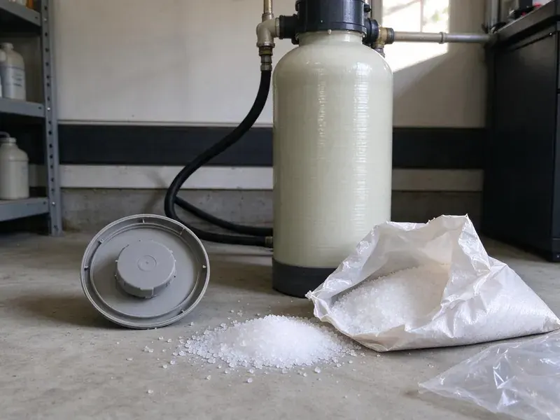

Flood Restoration in Lynchburg, VA
FBN Plumbing handles flood restoration in Lynchburg, VA from the pump-out through drying, sanitizing and rebuild.
- Complete Drying & Repair
- Fast Flood Water Removal
- Mud and Debris Cleanup
- Nights and Weekends

Flooded in Lynchburg, VA? Call for a Pump-Out.
Stay out of water near outlets, then call FBN Plumbing and we will handle the rest.
Professional Flood Restoration After Storms and Pipe Bursts in Lynchburg, VA
FBN Plumbing knows flood water is never clean. Water that came in from outside picks up soil, fertilizer, sewage and whatever was in the street, so it gets handled like sewage under industry guidelines. Porous materials it touched usually come out. Our crews in Lynchburg protect themselves and your family while they work.
Some of what we do:
- Odor removal and disinfection
- Moisture mapping with meters and thermal cameras
- Flood cuts and wet insulation removal

Additional Plumbing Maintenance Services in Lynchburg, VA
Our maintenance and specialty plumbing services in Lynchburg, VA protect your home year-round and extend the life of every system.


Customers
Why Choose FBN Plumbing for Flood Restoration in Lynchburg, VA?
Flood water also gets into the plumbing. Floor drains fill with silt, a gas water heater with a flooded burner is no longer safe to light, and sump pumps can burn out after running nonstop through a storm. Our plumbers check it all.
- Clear Pricing, You see the estimate before work starts, with line items you can follow.
- Trained Technicians, Our restoration techs follow IICRC guidelines for flood and sewage water.
- Rapid Pump-Out, High-capacity pumps and extractors remove standing water fast.
Citywide Coverage
Older districts and newer subdivisions across Lynchburg both flood, just in different ways. Older homes often have block foundations and floor drains tied to the sewer, while newer homes may have sump pits and perimeter drains. We know both well.
Experienced Team
Each member of our flood crew knows contaminated water. They follow protective gear rules, bag debris before it leaves the work area and clean their tools between rooms so contamination does not spread through the house. Habits matter here.
Safety-First Approach
Removed materials are disposed of properly, and rebuild work follows local building and plumbing codes. Required permits get pulled, and inspections are booked so the work is approved before the claim closes. Paperwork stays clean.
Trusted Certified Lynchburg Plumbing Services Professionals
At FBN Plumbing, we take pride in licensed, certified plumbing services throughout Lynchburg, VA. Those papers on the wall mean something. Our plumbers hold recognized industry credentials, and they follow strict safety and quality rules on every repair, installation and maintenance call we run.
Call Us Now PHCC Plumbing Contractor Recognition
PHCC Plumbing Contractor Recognition Better Business Bureau (BBB) Accreditation
Better Business Bureau (BBB) Accreditation Angi Certified Pro
Angi Certified Pro ISO 9001 Quality Management Certification
ISO 9001 Quality Management CertificationFlood Cleanup and Restoration in Lynchburg, VA
Sump Pump Installation for Flood Prevention in Lynchburg, VA
A working sump pump is the first defense for a basement or crawl space. Saturated ground after a storm can push water into basements and back up sewer lines, making backwater valves and sump pumps worthwhile. Our plumbers install submersible and pedestal pumps from Zoeller and Wayne, sized to the pit and the inflow, with a check valve and a discharge line that carries water well away from the foundation. Add a backup pump. Storms knock out power.

Sanitization and Odor Removal in Lynchburg
Flood odor comes from bacteria growing in wet materials. Our flood restoration process in Lynchburg removes the source, disinfects every surface the water touched, and runs HEPA air scrubbers to clean the air while drying continues. Covering the smell fails. The smell leaves once the materials are dry and clean.
Garage and Ground-Level Flooding in Lynchburg, VA
Garages take the brunt of runoff because they sit at driveway level. Garage flooding can ruin heater burners, laundry machines, stored items and the lower drywall. The water heater gets inspected. Ruined units get replaced.
Plumbing Repairs After Flooding in Lynchburg, VA
Sometimes the plumbing caused the flood, and sometimes the flood broke the plumbing. We repair burst lines, swap flooded water heaters, clear floor drains and replace failed sump pumps. Everything gets tested. Water heaters from Rheem and Bradford White are on our trucks.
Insurance Claims Assistance for Flood Damage in Lynchburg, VA
Flood claims run on documentation. FBN Plumbing photographs the water line and the damage before we touch it, logs moisture readings by room each day, and writes an itemized scope. Insurers ask for it. We do not file the claim, but we can talk with your adjuster about why each wall was cut and each floor was removed.
Mold Remediation and Prevention in Lynchburg
Flooded drywall and framing grow mold fast. Our crew in Lynchburg removes porous materials the water touched, applies an EPA-registered antimicrobial to the framing, and dries the space fast enough to stay ahead of the 24 to 48 hour window. Existing growth gets contained. Plastic sheeting and negative air keep spores from spreading.
Thermal Imaging and Moisture Detection in Lynchburg, VA
Water wicks up walls well past the visible line. A thermal camera shows the cool, damp areas behind drywall, and a moisture meter confirms them, so we know exactly where to cut and where to dry in place in your Lynchburg home. No guesswork needed. It also proves drying is done.

Burst Pipe Flooding in Lynchburg, VA
A major pipe break can flood a home as badly as a storm. We shut off the main, repair the pipe and start extraction right away, often within an hour of arriving at your home. Supply water is cleaner. Wet drywall, insulation and flooring are checked with meters and removed if they cannot dry in place.
Flood Restoration Near Me in Lynchburg, VA
We know which parts of Lynchburg are prone to runoff and how local homes are built. Knowing how local homes are built helps us find and dry hidden moisture. Daily checks are easy.
Residents and businesses across Lynchburg call us after storms and pipe breaks. Basements are common in northern and western parts of Virginia, while crawlspaces and slabs are more typical in the east and south. Our crews have seen how that ground condition affects drying, and we plan equipment and timing around it from the first day. Local ground matters.
FBN Plumbing at a Glance
- Licensed and insured plumbers serving Lynchburg, VA
- 24/7 emergency service with same-day scheduling
- Upfront, flat-rate pricing before work begins
- 4.9-star rated by 798+ Virginia customers
Lynchburg Map
Lynchburg Information
- Population
- 79,535
- Area codes
- 434/804/540
- Service area
- Lynchburg and communities within 40 miles
- Nearby
- Roanoke, Charlottesville, Blacksburg, Harrisonburg
Flood water from outside is treated as contaminated, so in Lynchburg, VA the cleanup means removing soaked drywall, insulation and carpet before drying starts.
Expert Services
Call FBN Plumbing for honest, reliable plumbing from people who know the trade in Lynchburg, VA.
Our Specialized Plumbing Services in Lynchburg, VA
At FBN Plumbing, you get every kind of plumbing service from one company across Lynchburg, VA. We go from leak detection all the way to full system installations, for homes and commercial buildings, and we do it quickly at a fair price. Take a look at our core services below:


How Flood Restoration Works in Lynchburg, VA
From the first call to the final reading, here is what happens on a flood in Lynchburg, VA.
Call for Help
Call (434) 230-6997 for emergency flood service. We dispatch a team quickly.
Safety Check
Our technicians check electrical and gas hazards, then plan the cleanup.
Remove Water
Pumps and extractors pull out the water, which shortens drying time.
Frequently Asked Questions About Flood Restoration in Lynchburg
Costs in Lynchburg, VA depend on how deep the water got, how many rooms it reached and what it carried in. A small clean water flood caught early might run $1,500 to $4,000, while a basement flood with tear-out and rebuild can reach $10,000 to $30,000. Depth drives the price. You get a written estimate.
Our trucks carry Dri-Eaz and Abatement Technologies dehumidifiers and air movers. Extraction units come from makers like Prochem and Mytee, and we use FLIR thermal cameras and Tramex and Protimeter moisture meters to find and track wet areas. Good gear dries faster.
Stay safe and avoid electrical hazards. Turn off power and water if safe, and photograph everything. Next, get extraction started before the water climbs further up the walls.
Submersible pumps handle deep standing water, and truck-mounted extractors pull it out of carpet and floors. Drying gear includes air movers, LGR and desiccant dehumidifiers, HEPA scrubbers and moisture meters. It fits on one truck.
Peeling paint, visible mold spots and warped flooring are the usual signs. Stained walls, lingering odors or loose baseboards also point to trapped water. We can scan for it.
Yes, our repairs carry a workmanship warranty. We also document final moisture readings before the rebuild, so you have proof the structure was dry when the walls went back up. You get the details on paper.
Outside surface water is usually excluded from standard homeowners policies. Storm runoff usually needs a flood policy. Damage from a burst pipe or appliance failure is more often covered under the regular policy as sudden and accidental.
Clean water in small amounts may be manageable. Dirty flood water needs gear and disinfection. Hidden moisture in walls and floors can cause mold if it is not dried thoroughly, and professional cleanup is safer and more thorough.
What People Are Saying About Our Plumbing Experts?

Daniel K.
A pipe burst in the garage ceiling at 11 at night. Someone answered on the second ring, and the plumber was in my driveway about fifty minutes later. He shut off the main, cut out the split section, and had water back on before 2 am.
Emergency Plumbing · Roanoke, VA
Monica A.
Our water bill nearly doubled in one month with no change in how we used water. The tech checked the meter, heard the leak under the hallway with his equipment, and opened a hole about a foot square. Fixed the same day.
Slab Leak Repair · Tuckahoe, VA
Paul B.
Our pit pump ran nonstop even in dry weather. The plumber found the check valve was stuck open, so the same water kept cycling back into the pit. New valve, new float switch, done in an hour. It runs quiet now.
Sump Pump · Richmond, VASofia M.
Two new toilets went in during one visit. The tech set them on new wax rings and swapped the old supply lines. He also noticed our bathroom faucet dripping and replaced the cartridge while he was there. No mess left behind.
Toilet Installation · Roanoke, VA
Marcus H.
Grease from the fryer line kept clogging the kitchen drain at my diner. FBN Plumbing hydro jetted the line after closing, showed me the buildup on camera, and set us up on a quarterly cleaning so it does not catch us on a Friday again.
Drain Cleaning · Roanoke, VARobert G.
The camera showed a full break in our clay sewer line near the street. FBN Plumbing replaced it with a trenchless pipe burst, so the only digging was two small pits in the yard. They let us watch the footage before and after.
Sewer Line Replacement · Richmond, VA